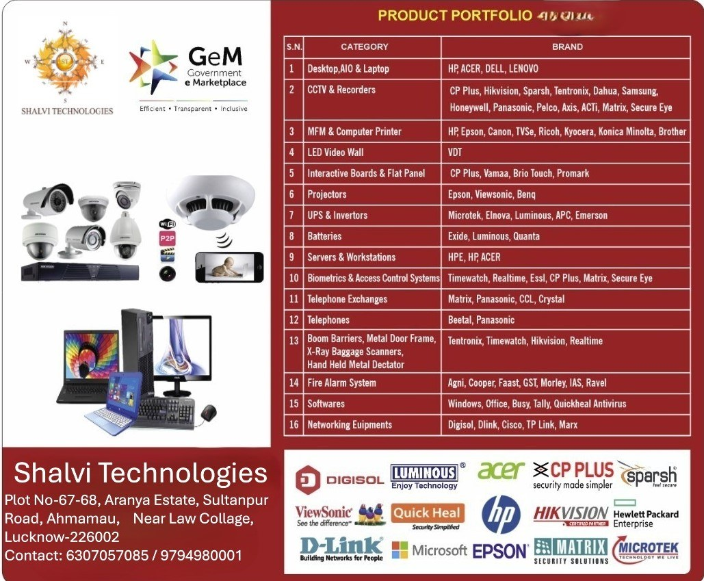

Professionally managed. Technically grounded. Oriented to the solution, not the carton.
We analyse the requirement, evaluate the products available, and provide the fit that the site can run.
Work began with information technology, audio-visual systems and office automation. It includes website development, hosting and management — and Swachh Bharat waste programmes, Ayushman Bharat medical equipment, queue management and anti-smog systems. The house also takes work in software and cyber security (centred on cyber security software), forensic laboratory set-up software, forensic workstation desktops, and drones.
Clients stay because the installed base is mixed and the relationship is long. Government and corporate projects of real complexity have been executed from Lucknow. Alliances with world-leader brands let us specify what the indent needs.
Gyanesh Shukla
Proprietor. Graduate of Punjab Technical University, Jalandhar. Registered office: Plot No. 67–68, Aranya Estate, C.G. City, Ahmamau, Sultanpur Road, Near Law College, Lucknow 226002.
Consult on the requirement. Keep service standards. Adopt current technology without abandoning support. Ethical business — the extra mile when the site asks.
